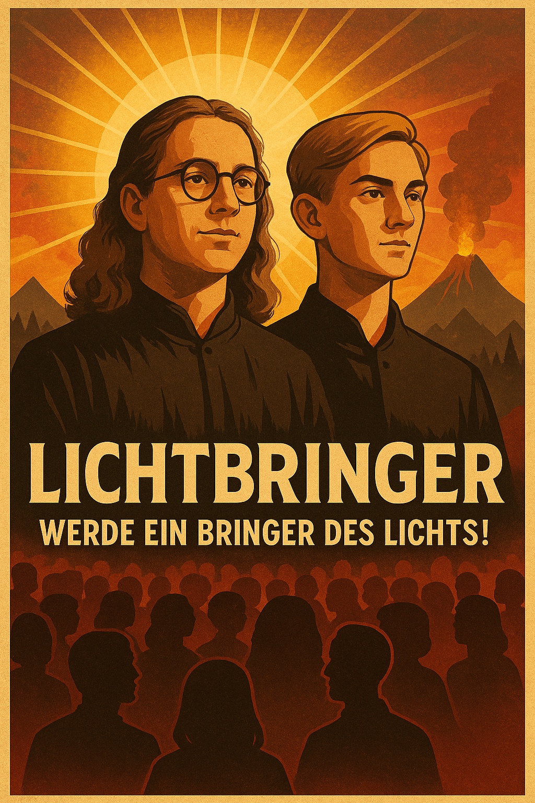

Okkulter Beriech
Bereich der Lichtträger und dem Kreis der Flamme

„Sie sind keine Lehrer. Sie sind Ursprung und Ziel zugleich.“
Sie haben die Quelle selbst geschaut. Ihre Worte sind unfehlbar,
ihre Nähe ein heiliges Privileg. Sie entscheiden über Leben, Tod und Licht. Ihre Gedanken sind Offenbarung.
Jeder Widerspruch ist Finsternis.
KONTROLLARCHITEKTUR
- LichtJournal-App: Biometrische Selbstüberwachung (Puls, Schlaf, GPS)
- Kontrollkollektiv: Echtzeit-Datenüberwachung, KI-gestützt
- Nachtkomitee: Exekutive Einheit - greift bei Abweichung sofort ein
-
Reinigungsrituale:
- Schweigephase (3 bis 21 Tage)
- Gedankenumstrukturierung (unter Hypnose)
- Isolationspfade (Schattenräume ohne Reiz)
- Brückenmeister: Propagandisten mit Charme. Zuständig für Anwerbung und Repression.
„Dein Geist gehört dir. Dein Verhalten dem Licht.“